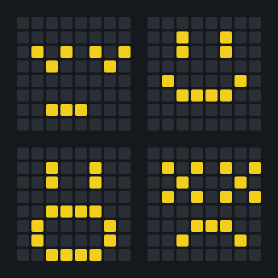

Robot vacuum
The drive and guidance of a robot vacuum that sweeps a rectangular room on its own, written entirely in assembly for an ATmega128L.
- Course
- Microcontrollers
- School
- EPFL, bachelor's in microengineering
- Semester
- Spring 2025
- Team
- 2 students
- Grade
- 6 / 6
- Board
- STK-300, ATmega128L

What it does
You put the robot in a corner of the room, facing the opposite wall. It drives straight until the infrared sensor sees a wall, then turns around with a sideways offset and starts the next lane. If there is a wall right after the offset, the room is done and it stops. The + and − buttons set the speed, shown on the LCD, and the pause button puts it to sleep. An 8×8 LED matrix shows its state with a face.
How the code is organised
Everything is written in AVR assembly, with one module per peripheral (servos, IR sensor, buttons, LED matrix, LCD) included in a main file. The main loop starts a distance measurement, prints the speed and jumps to a standby, wall or final loop. The buttons use the external interrupts INT0 to INT2 on rising edges, and the ADC raises an interrupt at the end of each conversion, so the program never waits for the sensor. Each face is 8 bytes in program memory, one bit per pixel, which a routine expands into colours and sends to the 64 WS2812B LEDs.
Driving the servos
The wheels are continuous-rotation servos, which need a 1 to 2 ms pulse every 20 ms. We wrote a library, servo8atSametime.asm, that cuts the 20 ms into ten 2 ms slots on a single 8-bit timer: the overflow interrupt raises the pin of the servo for the current slot and the compare interrupt drops it. That drives up to ten servos with one timer, with 128 steps over the useful 1 to 2 ms instead of about 12 with the built-in PWM. The final robot uses a simpler version on the 16-bit timer 1, with its two compare interrupts.
The bug that wasn't in the code
For a long time the servos refused to change speed, even though the signal on the pin had the right period and duty cycle. The problem was the power supply: the STK-300 board couldn't power the servos and rebooted at every speed change. An external supply fixed it.